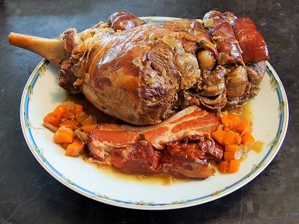

Index
Seven hour leg of lamb

Description
French traditional recipe of lamb is often a leg of lamb, with cloves of garlic inserted and packed inside, baked in oven while guests are already there, and served with green beans and flageolets or a potato gratin.
Ingredients
- 1 shank end leg of lamb
- 2 bacon slices 2 cm thick
- 2 carrots
- 2 onions
- celery (optionnal)
- 1 head garlic
- 250 ml dry white wine (± 1 cup)
- 250 ml veal or chicken stock (± 1 cup)
- 4 springs thyme
- 1 bay leaf
- salt and freshly ground pepper
- ollive oil
Steps
FIRST READ THE MAIN STEPS OF THE RECIPE
- Fry the meat and then the bacon on each side. Remove them and fry the chopped vegetables. Add stock and wine. Bake in the oven all ingredients for 7 hours.
Recipe
- First make sure that the leg of lamb will fit in your cocotte. If not, get the butcher cut off the shank end or even remove it (but this is a pitty as bones enhance flavors).
- Preheat the oven to 120°C (250°F).
- Pour olive oil in the pan and heat. Be generous. Fry the leg of lamb for about 5 minutes on each side, until browned.
- Remove and place it into a plate. Sear briefly bacon on each side (1-2 minutes) then take it out as well.
- Mealwhile, prepare the aromatic garnish.
- Wash the carrots, peel and cut them into mirepoix (cut them into 4 lengthwise, then cut these pieces into small cubes).
- Peel the onions, cut them in half and chop them (in the same size as the carrots).
- Prepare garlic. Remove the outside thick skin of the head of garlic. Separate the head in cloves. Don’t remove the skin.
- When meat and bacon are removed, through in the pan the aromatic garnish (carrot, onion and garlic), season with salt and cook for about 2 to 3 minutes over medium heat. Often stir so that vegetables won’t stick to the pan. Then pour white wine, increase the heat until it simmers. Let it simmer until at least half of the white wine evaporates.
- Place the leg of lam on the vegetables, add one piece of bacon on each side. Add the veal stock, the thyme springs and the bay leaf. Add salt and ppper. Bring to the boil then remove from heat and cover your dish.
- Put your lidded casserole in the oven and forget it for 7 hours at 120°C (250°F).